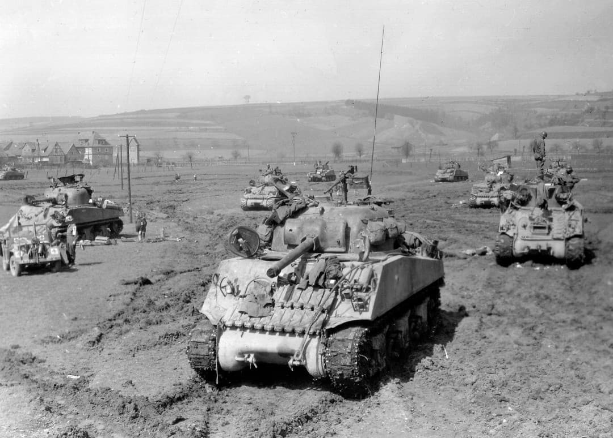
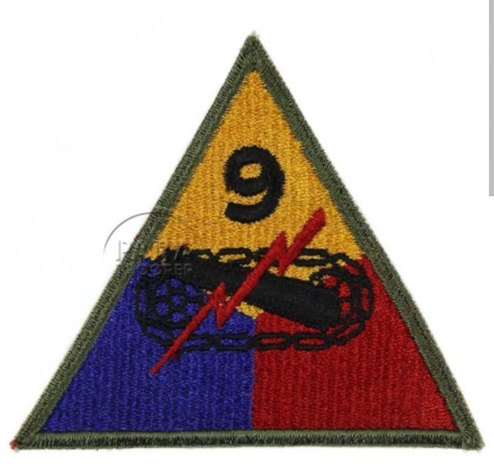
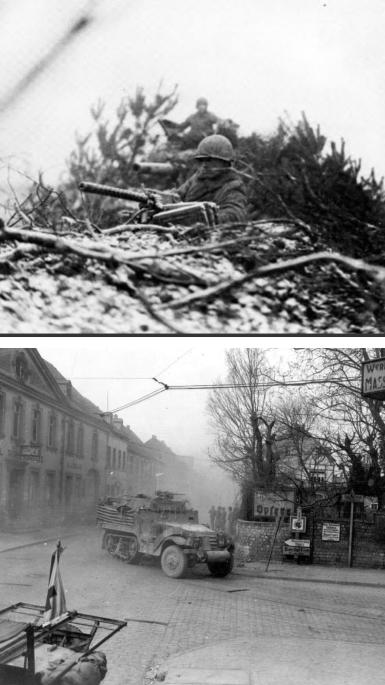

La division fantôme : de la défense héroïque des Ardennes à la prise audacieuse du pont de Remagen

La 9th Armored Division (9e division blindée américaine), surnommée les « Phantom Division » (La Division Fantôme) en raison de sa discrétion et de ses redéploiements soudains sur le front, est entrée dans l'histoire militaire pour son rôle décisif lors de la Seconde Guerre mondiale.
Bien qu'entrée en campagne plus tardivement que d'autres unités, elle s'est illustrée de manière éclatante en stoppant net les avant-gardes allemandes dans les Ardennes, puis en s'emparant contre toute attente du pont de Ludendorff à Remagen, ouvrant la première tête de pont stratégique à l'Est du Rhin.
Activée en juillet 1942 au Fort Riley (Kansas) sous les ordres du major général **John W. Leonard**, la division a subi de nombreux entraînements rigoureux avant d'être déployée sur le front européen à l'automne 1944.
Son insigne d'épaule triangulaire de couleur jaune, bleue et rouge respecte le standard des divisions blindées, symbolisant la synergie entre les forces mécanisées, l'artillerie et l'infanterie de soutien.

Au moment du déclenchement de l'offensive des Ardennes par la Wehrmacht le 16 décembre 1944, des éléments de la 9th Armored (notamment le *Combat Command B*) se trouvaient positionnés dans les secteurs exposés de Saint-Vith et de Echternach.
En luttant farouchement contre des forces ennemies largement supérieures en nombre, la division a brisé le calendrier initial de l'offensive allemande, payant un lourd tribut mais offrant un temps précieux à l'état-major américain pour organiser la défense.

Le fait d'armes le plus célèbre de la 9th Armored intervient le **7 mars 1945**. Le *Combat Command B* (CCB) atteint le Rhin à Remagen et découvre, à la stupéfaction générale, que le **pont de Ludendorff** est encore debout, bien que les Allemands aient tenté de le faire sauter.
Sous les ordres du lieutenant **Karl H. Timmermann**, les troupes foncent sur l'ouvrage sous le feu ennemi, coupent les charges explosives et s'emparent du pont intact. Cette tête de pont inespérée de l'autre côté du Rhin bouleverse les plans alliés et accélère la chute finale du Troisième Reich.
La fulgurante audace de la « Phantom Division » à Remagen a changé le cours des derniers mois de la guerre en Europe, réduisant potentiellement de plusieurs semaines la durée des combats en Allemagne. Dissoute après la guerre, elle demeure une légende de la cavalerie blindée américaine.
Page du Musée HOP WW2 – Section Unités & Divisions